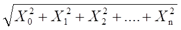
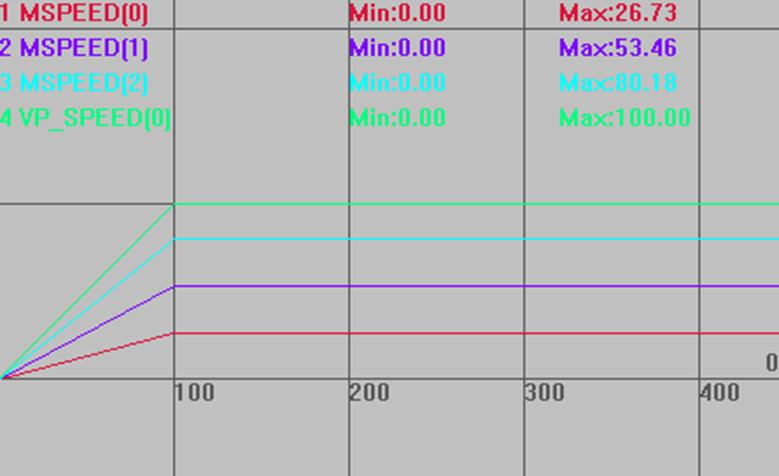
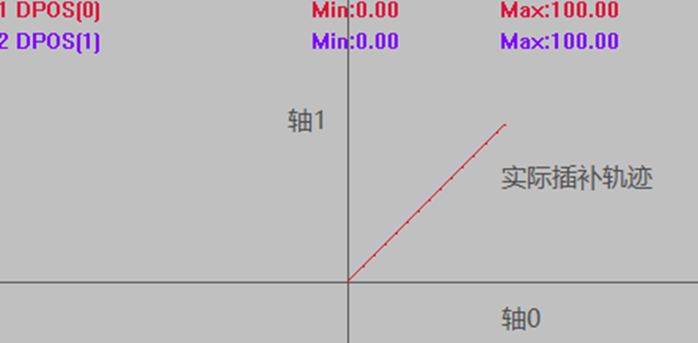

|
类型 |
多轴运动指令 |
|
描述 |
直线插补运动，相对运动一段距离。
插补运动时只有主轴速度参数有效，主轴是BASE的第一个轴，运动参照这个轴的参数。 自定义速度的连续插补运动可以使用SP后缀的指令，见*SP描述。
插补运动距离X=  运动时间T=X/主轴SPEED |
|
语法 |
MOVE(distance1 [,distance2 [,distance3 [,distance4...]]]) distance1：第一个轴运动距离 distance2：下一个轴运动距离 |
|
适用控制器 |
通用 |
|
例子 |
例一 BASE(0,1,2) '主轴为轴0 ATYPE=1,1,1 '设为脉冲轴类型 UNITS=100,100,100 '脉冲当量设置 SPEED=100,10,1000 '只有主轴速度100起作用，作为合成运动的速度 ACCEL=1000,1000,1000 DECEL=1000,1000,1000 DPOS = 0,0,0 TRIGGER '自动触发示波器 MOVE(500,1000,1500) '轴0，1，2直线插补相对距离 WAIT IDLE '等待运动停止 PRINT *DPOS '打印结果，500,1000,1500
插补运动各轴实际速度为主轴速度的分速度 MSPEED(0)垂直刻度100 MSPEED(1)垂直刻度100 MSPEED(2)垂直刻度100 VP_SPEED(0)垂直刻度100 
例二 ATYPE=1,1 UNITS=100,100 '脉冲当量设置 SPEED=100,100 ACCEL=1000,1000 DECEL=1000,1000 DPOS=0,0 MPOS=0,0 TRIGGER '自动触发示波器 MOVE(100,100)
插补轨迹 DPOS(0)水平刻度100 DPOS(1)垂直刻度100  |
|
相关指令 |